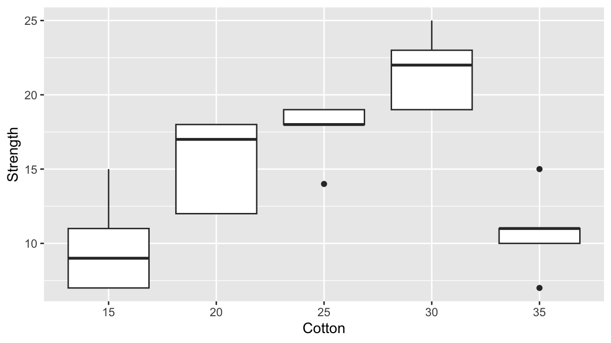
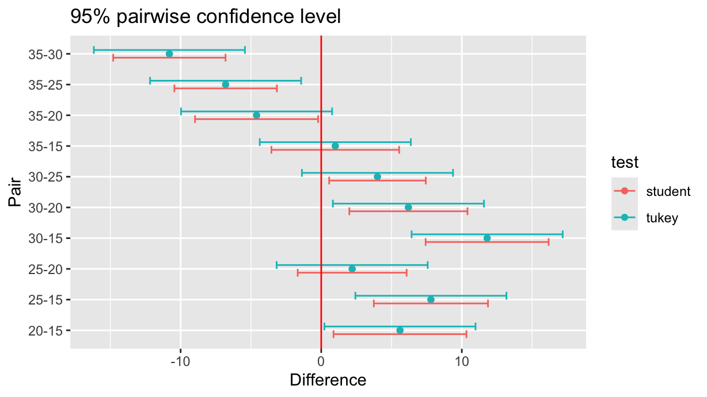
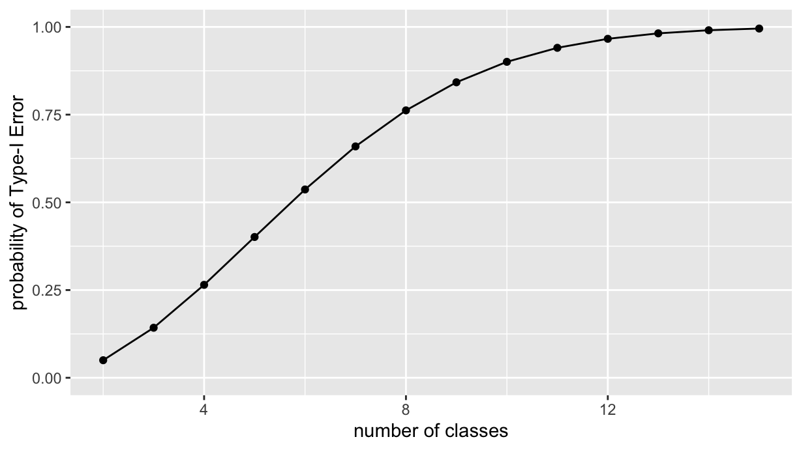
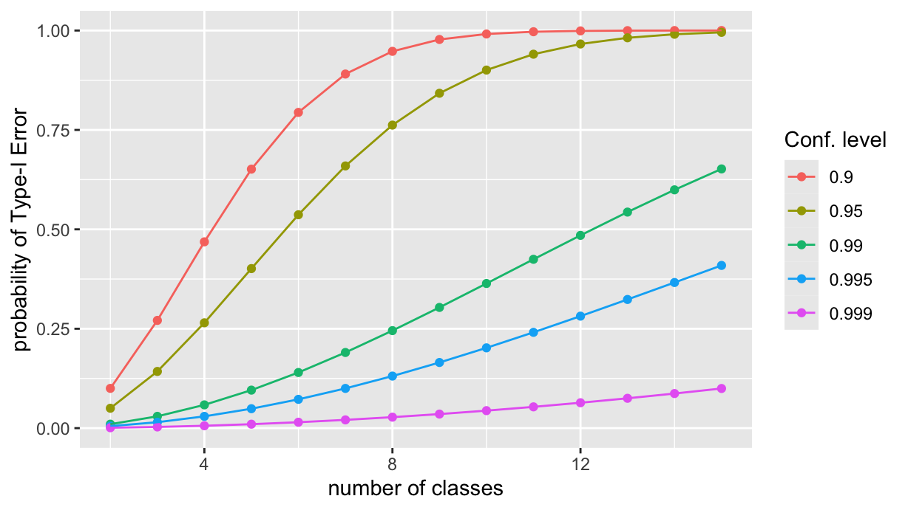

library(tidyverse)
library(adas.utils)Tukey vs. Student
R
tidyverse
inference
Tukey
Abstract
To compare two samples, or groups, we can use a T-test. But if we want to compare more than two groups, we need to use Tukey’s test. In this post we investigate the reason why a Tukey’s test is more appropriate and robust than a set of pairwise T-tests for all possible combinations of groups. This is also an excuse to illustrate the power of purrr and dplyr packages, specifically for the use of map/reduce, join_left, and pivot_longer/pivot_wider functions.
Packages that we need
In this example, we are using the packages tidyverse and adas.utils version 1.1.4 (see https://github.com/pbosetti/adas.utils)
Repeated T-test vs. Tukey’s test
The dataset
Let us compare the result of a Tukey’s test with a repeated Student’s T-test on all combinations. We consider the cotton dataset, which is included in the adas.utils package from version 1.1.4. The dataset contains the tensile strength of mixed cotton-synthetic yarns with different cotton content:
cotton %>%
ggplot(aes(x=Cotton, y=Strength, group=Cotton)) +
geom_boxplot()
Inference on Strength
Now we want to compare all the possibile combinations of treatmentswith a set of pairwise T-tests.
First, we create the list of pairwise combinations, sorting each pair in descending order, as it is done by the TukeyHSD function:
lvl <- levels(cotton$Cotton) %>%
combn(2, FUN=sort, decreasing=T) %>%
as_tibble(.name_repair="minimal") %>%
as.list() %>% glimpse()List of 10
$ : chr [1:2] "20" "15"
$ : chr [1:2] "25" "15"
$ : chr [1:2] "30" "15"
$ : chr [1:2] "35" "15"
$ : chr [1:2] "25" "20"
$ : chr [1:2] "30" "20"
$ : chr [1:2] "35" "20"
$ : chr [1:2] "30" "25"
$ : chr [1:2] "35" "25"
$ : chr [1:2] "35" "30"Now, for each pair we do a T-test on the corresponding cotton data-frame subset, and accumulate into a new tibble the values of interest. We get the df table that is analogous to the TukeyHSD output:
df <- lvl %>% reduce(\(acc, pair) {
tt <- cotton %>%
filter(Cotton %in% pair) %>%
t.test(Strength~Cotton, data=., var.equal=TRUE)
bind_rows(acc, list(
pair = paste0(pair[1], "-", pair[2]),
diff = -median(tt$conf.int),
lwr = -tt$conf.int[2],
upr = -tt$conf.int[1],
p.value = tt$p.value
))
}, .init=tibble())
df %>% knitr::kable()| pair | diff | lwr | upr | p.value |
|---|---|---|---|---|
| 20-15 | 5.6 | 0.8740978 | 10.3259022 | 0.0257453 |
| 25-15 | 7.8 | 3.7398608 | 11.8601392 | 0.0021967 |
| 30-15 | 11.8 | 7.4246648 | 16.1753352 | 0.0002541 |
| 35-15 | 1.0 | -3.5423014 | 5.5423014 | 0.6253800 |
| 25-20 | 2.2 | -1.6724395 | 6.0724395 | 0.2265324 |
| 30-20 | 6.2 | 1.9982605 | 10.4017395 | 0.0093233 |
| 35-20 | -4.6 | -8.9753352 | -0.2246648 | 0.0415629 |
| 30-25 | 4.0 | 0.5641312 | 7.4358688 | 0.0277266 |
| 35-25 | -6.8 | -10.4461127 | -3.1538873 | 0.0026133 |
| 35-30 | -10.8 | -14.7941163 | -6.8058837 | 0.0002496 |
To be compared with Tukey’s values:
ttdf <- TukeyHSD(aov(lm(Strength~Cotton, data=cotton)))$Cotton %>%
as.data.frame() %>%
rownames_to_column(var="pair") %>%
rename(p.value=`p adj`)
ttdf %>% knitr::kable()| pair | diff | lwr | upr | p.value |
|---|---|---|---|---|
| 20-15 | 5.6 | 0.2270417 | 10.9729583 | 0.0385024 |
| 25-15 | 7.8 | 2.4270417 | 13.1729583 | 0.0025948 |
| 30-15 | 11.8 | 6.4270417 | 17.1729583 | 0.0000190 |
| 35-15 | 1.0 | -4.3729583 | 6.3729583 | 0.9797709 |
| 25-20 | 2.2 | -3.1729583 | 7.5729583 | 0.7372438 |
| 30-20 | 6.2 | 0.8270417 | 11.5729583 | 0.0188936 |
| 35-20 | -4.6 | -9.9729583 | 0.7729583 | 0.1162970 |
| 30-25 | 4.0 | -1.3729583 | 9.3729583 | 0.2101089 |
| 35-25 | -6.8 | -12.1729583 | -1.4270417 | 0.0090646 |
| 35-30 | -10.8 | -16.1729583 | -5.4270417 | 0.0000624 |
Now let’s join both tables and make a common plot:
compared <- df %>%
left_join(ttdf, by=join_by(pair), suffix=c(".student", ".tukey")) %>%
pivot_longer(-pair, names_to = c("stat", "test"), names_pattern = "(.*)\\.(student|tukey)$") %>%
pivot_wider(names_from = stat)
compared %>% knitr::kable()| pair | test | diff | lwr | upr | p.value |
|---|---|---|---|---|---|
| 20-15 | student | 5.6 | 0.8740978 | 10.3259022 | 0.0257453 |
| 20-15 | tukey | 5.6 | 0.2270417 | 10.9729583 | 0.0385024 |
| 25-15 | student | 7.8 | 3.7398608 | 11.8601392 | 0.0021967 |
| 25-15 | tukey | 7.8 | 2.4270417 | 13.1729583 | 0.0025948 |
| 30-15 | student | 11.8 | 7.4246648 | 16.1753352 | 0.0002541 |
| 30-15 | tukey | 11.8 | 6.4270417 | 17.1729583 | 0.0000190 |
| 35-15 | student | 1.0 | -3.5423014 | 5.5423014 | 0.6253800 |
| 35-15 | tukey | 1.0 | -4.3729583 | 6.3729583 | 0.9797709 |
| 25-20 | student | 2.2 | -1.6724395 | 6.0724395 | 0.2265324 |
| 25-20 | tukey | 2.2 | -3.1729583 | 7.5729583 | 0.7372438 |
| 30-20 | student | 6.2 | 1.9982605 | 10.4017395 | 0.0093233 |
| 30-20 | tukey | 6.2 | 0.8270417 | 11.5729583 | 0.0188936 |
| 35-20 | student | -4.6 | -8.9753352 | -0.2246648 | 0.0415629 |
| 35-20 | tukey | -4.6 | -9.9729583 | 0.7729583 | 0.1162970 |
| 30-25 | student | 4.0 | 0.5641312 | 7.4358688 | 0.0277266 |
| 30-25 | tukey | 4.0 | -1.3729583 | 9.3729583 | 0.2101089 |
| 35-25 | student | -6.8 | -10.4461127 | -3.1538873 | 0.0026133 |
| 35-25 | tukey | -6.8 | -12.1729583 | -1.4270417 | 0.0090646 |
| 35-30 | student | -10.8 | -14.7941163 | -6.8058837 | 0.0002496 |
| 35-30 | tukey | -10.8 | -16.1729583 | -5.4270417 | 0.0000624 |
compared %>%
ggplot(aes(x=diff, y=pair, color=test)) +
geom_point() +
geom_errorbar(aes(xmin=lwr, xmax=upr), width=0.5, position=position_dodge()) +
geom_vline(xintercept=0, color="red") +
labs(x="Difference", y="Pair", title="95% pairwise confidence level")
The Family-Wise Error Rate
The Family-Wise Error Rate
As expected, the Tukey’s test in the last plot shows larger confidence intervals, that is, it has reduced chances of a false positive (Type I Error). More specifically, Tukey’s test controls the family-wise error rate (FWER) — the probability of making any false positive in the full set of comparisons.
Let’s see why. If we set a confidence level of 0.95, it means that the probability of not making a Type I error on a single T-test is 0.95.
For 3 independent tests, the probability of no Type I error at all (in any of the tests) is: \[
0.95^3 \approx 0.857
\] So the chance of making at least one Type I error is: \[
1 - 0.95^3 \approx 0.143 \quad \text{(14.3\%)}
\] That’s almost triple the risk you thought you were accepting! Furthermore, this risk increases exponentially with the number of comparisons. Given \(n\) elements, the number of possible combinations of \(k\) elements is given by the binomial coefficient: \[
\binom{n}{k} = \frac{n!}{k!(n-k)!}
\] In R, the latter is provided by the choose(n, k) function:
choose(5, 2)[1] 10so, with increasing number of classes to be compared, this is what happens to the probability of committing at least one Type-I error:
2:15 %>% reduce(\(acc, k) {
nt <- choose(k, 2)
bind_rows(acc,
list(n=k, p=1-0.95^nt)
)
}, .init=tibble()) %>%
ggplot(aes(x=n, y=p)) +
geom_point() +
geom_line() +
ylim(0, 1) +
labs(
x="number of classes",
y="probability of Type-I Error")
And what happens if we change the confidence level? Let’s see, by creating a parametric plot similar to the ast one, but with different confidence levels. First we factor the last reduce opration into a function, FEWR, that takes the confidence level as an argument. The function returns a tibble with the number of classes and the corresponding probability of Type I error.
FEWR <- function(levels, conf.int=0.95) {
reduce(levels, \(acc, k) {
nt <- choose(k, 2)
bind_rows(acc,
list(n=k, p=1-conf.int^nt)
)
}, .init=tibble())
}Then we apply the FEWR function to a set of confidence levels, and join the results into a single tibble via the usual reduce, and finally, we plot the results:
cl <- c(0.9, 0.95, 0.99, 0.995, 0.999)
N <- 2:15
cl %>%
reduce(\(acc, ci) {
fewr <- FEWR(N, ci) %>% rename(!!paste0("cl-", ci):=p)
left_join(acc, fewr, by=join_by(n))
}, .init=tibble(n=N)) %>%
pivot_longer(-n, names_to = c(NA, "cl"), names_pattern="(cl-)(.*)") %>%
ggplot(aes(x=n, y=value, color=cl)) +
geom_point() +
geom_line() +
ylim(0, 1) +
labs(
x="number of classes",
y="probability of Type-I Error",
color="Conf. level")
That’s all, folks!